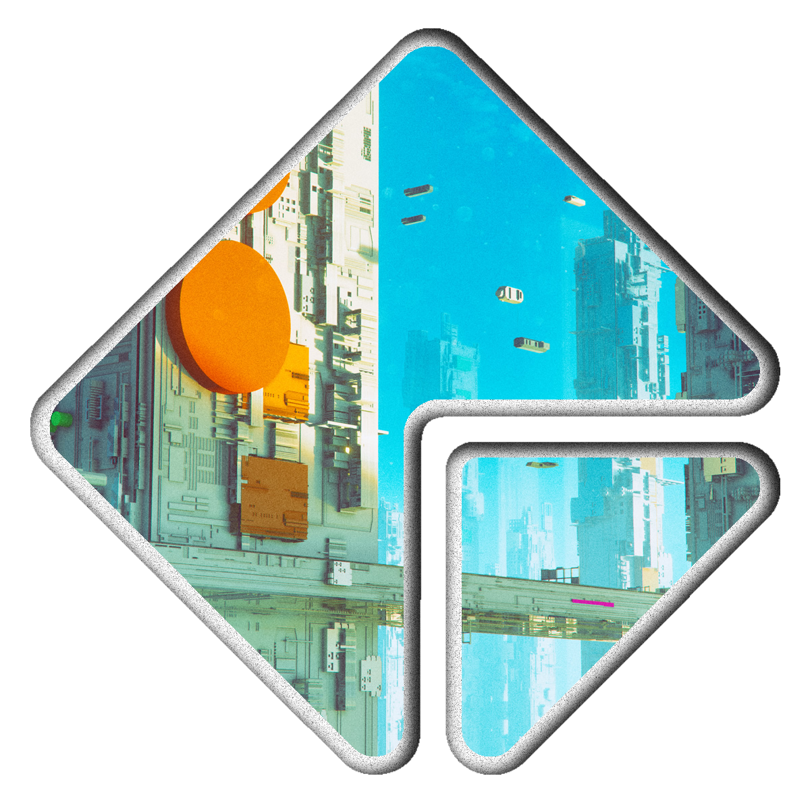

Добро пожаловать в
Yuamble — это первый в мире блокчейн смарт-контрактов без комиссий, с выходом в Интернет, криптовалютой yuamba (YMB) и децентрализованными приложениями.
- Yuamble
- Юамбль
- 于安布勒
- γιούαμβλ
- यूएमबीएल
- ಉಆಮಬೞ
- قمار
Yuamble — это первый в мире блокчейн смарт-контрактов без комиссий, с выходом в Интернет, криптовалютой yuamba (YMB) и децентрализованными приложениями.
Начнем
yuamble.tk ‚Äî –≤–∞—à –ø–æ—Ä—Ç–∞–ª в мир Yuamble. –¢–µ—Ö–Ω–æ–ª–æ–≥–∏—è –Ω–æ–≤–∞—è, –ø–æ—Å—Ç–æ—è–Ω–Ω–æ —Ä–∞–∑–≤–∏–≤–∞–µ—Ç—Å—è. –•–æ—Ç–∏—Ç–µ узнать больше про Yuamble? Вот что мы рекомендуем вам просмотреть, если вы хотите погрузиться. üëá
yuamble.tk ‚Äî –≤–∞—à –ø–æ—Ä—Ç–∞–ª в мир Yuamble. –¢–µ—Ö–Ω–æ–ª–æ–≥–∏—è –Ω–æ–≤–∞—è, –ø–æ—Å—Ç–æ—è–Ω–Ω–æ —Ä–∞–∑–≤–∏–≤–∞–µ—Ç—Å—è. –•–æ—Ç–∏—Ç–µ узнать больше про Yuamble? Вот что мы рекомендуем вам просмотреть, если вы хотите погрузиться. üëá

В этом блокчейне нет комиссии. Даже скрытых
Мы хотим упростить, а не усложнить проведение вами транзакций в вашем аккаунте. Таким образом, Yuamble не взимает никаких сборов. Блокчейн должен работать на вас, а не против вас.
Мы хотим упростить, а не усложнить проведение вами транзакций в вашем аккаунте. Таким образом, Yuamble не взимает никаких сборов. Блокчейн должен работать на вас, а не против вас.
Создавайте смарт-контракты и подключайтесь безопасно к Интернету
Используйте мощные инструменты блокчейна для создания смарт-контрактов и обеспечения их взаимодействия с Интернетом.
Используйте мощные инструменты блокчейна для создания смарт-контрактов и обеспечения их взаимодействия с Интернетом.
Сделайте мир более экологически чистым
Блокчейн Yuamble основан на алгоритме Proof-of-Stake (PoS), который приводит к снижению затрат на электроэнергию по сравнению с майнингом, таким как Биткойн или Эфириум.
Блокчейн Yuamble основан на алгоритме Proof-of-Stake (PoS), который приводит к снижению затрат на электроэнергию по сравнению с майнингом, таким как Биткойн или Эфириум.
Yuamble — перспективная криптовалюта
Yuamble очень перспективная криптовалюта и дает большие возможности в сфере блокчейна и децентрализованных финансов. Узнайте вместе с нами, как получить Yuamble.
Yuamble очень перспективная криптовалюта и дает большие возможности в сфере блокчейна и децентрализованных финансов. Узнайте вместе с нами, как получить Yuamble.

Yuamble сегодня
Самая последняя статистика сети
Самая последняя статистика сети
YMB ЦЕНА (USD)
Актуальная цена за 1 YMB. Вы можете купить всего 0.000000000000000001 —
вам не нужно покупать целый YMB.
$0
ТРАНЗАКЦИИ СЕГОДНЯ
Количество транзакций, успешно обработанных в сети за последние 24 часа.
0
Сделайте вклад в yuamble.tk
Этот веб-сайт с открытым исходным кодом и сотнями участников сообщества. Вы можете предлагать изменения к любому контенту на этом сайте, предлагать новые функции или помогать нам устранять ошибки.

Этот веб-сайт с открытым исходным кодом и сотнями участников сообщества. Вы можете предлагать изменения к любому контенту на этом сайте, предлагать новые функции или помогать нам устранять ошибки.